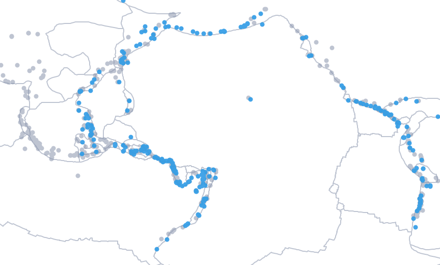

The problem
The objective is to predict tsunami potential from seismic features only. In this setting the two kinds of error do not cost the same:
| Error | Meaning | Cost |
|---|---|---|
| False positive | Predicts a tsunami when none occurs | Disruption |
| False negative | Misses a real tsunami | Disaster: lives at risk |
So the models are compared on the tsunami class rather than on raw accuracy, and the final alarm threshold accepts a moderate number of false alarms to miss as few tsunamis as possible.
The data
The Global Earthquake–Tsunami Risk Assessment dataset: 782 significant earthquakes recorded worldwide from 2001 to 2022, with magnitude, depth, intensity metrics, location and date, a binary tsunami label (38.9% positive) and no missing values. Tectonic plate boundaries come from the PB2002 model.

Epicenters over the plate boundaries, Pacific-centred: 716 of the 782 earthquakes fall in this window. Tsunamis line up along subduction zones.
Every record from 2001 to 2011 is labeled “no tsunami”, while later years have a realistic mix. A model would learn that the year predicts the answer. I removed the pre-2012 records, and the year and month columns, before any modelling.
Approach
- EDAtemporal bias found
- Leak removalpre-2012 records
- Feature engineeringincl. distance to plate boundary
- 8 pipelinesrepeated stratified CV, 10×3
- GridSearchCVtop 2 models
- Test evaluation90 events
Geospatial feature engineering
A first model might rely on indirect location proxies such as latitude, longitude or a Pacific flag. To give it a physical signal instead, I computed distance_to_fault_km: the distance from each epicenter to the nearest tectonic plate boundary, with GeoPandas and Shapely, after projecting both layers to a metric coordinate system. Whether it helped is measured further down.
| Engineered feature | Idea |
|---|---|
distance_to_fault_km | Distance from the epicenter to the nearest plate boundary (241 boundary segments) |
mag_depth_ratio | Magnitude divided by depth, which favors strong and shallow quakes |
is_shallow | Depth of 70 km or less |
pacific_region | Longitude in the Pacific ring of fire band |
- Leak-proof pipelines
Scaling and encoding live inside
sklearn.pipeline, so they are fitted on training folds only. - Robust validation
RepeatedStratifiedKFold, 10 folds × 3 repeats: stable estimates on a small, imbalanced dataset. - Targeted tuning
GridSearchCVonly on the two best models, gradient boosting and random forest.
Results
Model comparison
On the test set, default threshold
| Predicted no tsunami | Predicted tsunami | |
|---|---|---|
| Actual no tsunami | 19correct | 10false alarms |
| Actual tsunami | 3missed | 58detected |
| Test set, 90 events | Precision | Recall | F1 |
|---|---|---|---|
| Tsunami (61) | 0.85 | 0.95 | 0.90 |
| No tsunami (29) | 0.86 | 0.66 | 0.75 |
The test F1 (0.90) is close to the cross-validated one (0.905), so there is no sign of overfitting.
What each choice is worth
Each decision above can be measured by undoing it and keeping everything else the same: same gradient boosting, same split, same seed. The figures come from scripts/tsunami_extra.py, which reproduces the notebook’s final model exactly before changing one thing at a time.
| Variant | CV F1 | Test accuracy | ROC-AUC | Tsunamis missed | False alarms |
|---|---|---|---|---|---|
| Final model, threshold 0.5 | 0.905 | 85.6% | 0.904 | 3 / 61 | 10 / 29 |
| Same model, threshold chosen in cross-validation (0.04) | 0.905 | 85.6% | 0.904 | 1 / 61 | 12 / 29 |
| Trained with the leak (all years, year and month kept) | 0.907 | 93.6% | 0.980 | 3 / 61 | 7 / 96 |
Without distance_to_fault_km | 0.897 | 88.9% | 0.896 | 2 / 61 | 8 / 29 |
| Tuned for overall accuracy instead of tsunami F1 | Same hyperparameters, so the same model | ||||
- The leak would have flattered the model: 93.6% accuracy and 0.98 ROC-AUC, because the test set would then contain 2001 to 2011 earthquakes that the year alone classifies. Nothing of that carries over to a new earthquake.
- The threshold is the safety lever. Chosen on out-of-fold predictions of the training set, to keep at least 98% of tsunamis, it misses one tsunami instead of three for two more false alarms, at the same overall accuracy.
- The physical feature did not pay. Without it, cross-validated F1 drops by 0.008, within noise, and the test set even looks slightly better. I keep it for interpretability, not for the score.
Limits
The test set has only 90 events, 61 of them tsunamis. A model that always answered “tsunami” would already reach a tsunami F1 of 0.81 on that split, which is why the counts of missed tsunamis and false alarms say more than the F1.
- False alarms are the price: 10 to 12 out of 29 quiet earthquakes, depending on the threshold.
- Small dataset: 449 usable events after the leak removal, so every metric has a wide margin of error, and one tsunami more or less moves recall by 1.6 points.
- Seismic features only: no ocean depth, fault mechanism or sea-level data, which real warning systems rely on.
Reproduce
git clone https://github.com/Victor-MICHELON/Tsunami_Risk_Prediction_Model.git
cd Tsunami_Risk_Prediction_Model
pip install pandas numpy scikit-learn xgboost lightgbm matplotlib seaborn geopandas shapely pyproj
jupyter notebook tsunami-risk-prediction-ml-project-final-version.ipynb
# the comparisons of "What each choice is worth", from the portfolio repository
python scripts/tsunami_extra.py /path/to/Tsunami_Risk_Prediction_Model/DataThe data files are in Data/. The notebook was written on Kaggle, so its paths point to /kaggle/input/ and need to be adjusted locally.
Python, pandas, NumPy, scikit-learn (Pipeline, GridSearchCV, RepeatedStratifiedKFold), XGBoost, LightGBM, GeoPandas, Shapely, pyproj, Matplotlib, Seaborn